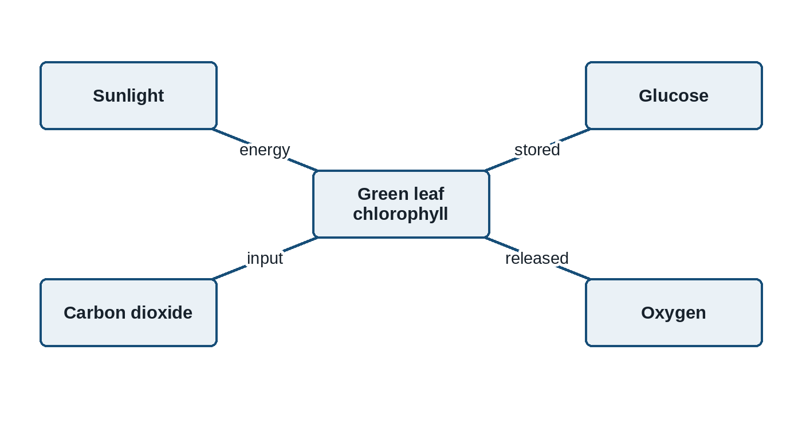

Natural Sciences: Photosynthesis Learning Pack
CONTROLLED REVIEW ASSET. Human approval is required before external release.
Natural Sciences: Photosynthesis Learning Pack
1. Core concept
Photosynthesis is the process by which chlorophyll-containing plants convert light energy into stored chemical energy. The process takes place mainly in the leaves.

carbon dioxide + water -> glucose + oxygen (in the presence of light and chlorophyll)
2. Guided investigation
| Leaf area | Light exposure | Colour after iodine | Starch present? |
|---|---|---|---|
| Covered section | No direct light | Yellow-brown | No |
| Exposed section | Direct light | Blue-black | Yes |
Identify the independent variable in this investigation.
(1)Use the observations to explain why light is necessary for starch production in the leaf.
(3)3. Assessment rubric
| Criterion | 2 marks | 1 mark | 0 marks |
|---|---|---|---|
| Evidence | Uses both observed colours accurately | Uses one relevant observation | No relevant observation |
| Reasoning | Links light to starch production | States a partial link | No valid scientific link |
Annexure A: Educator memorandum
Plants do not absorb food from soil. They manufacture glucose through photosynthesis.